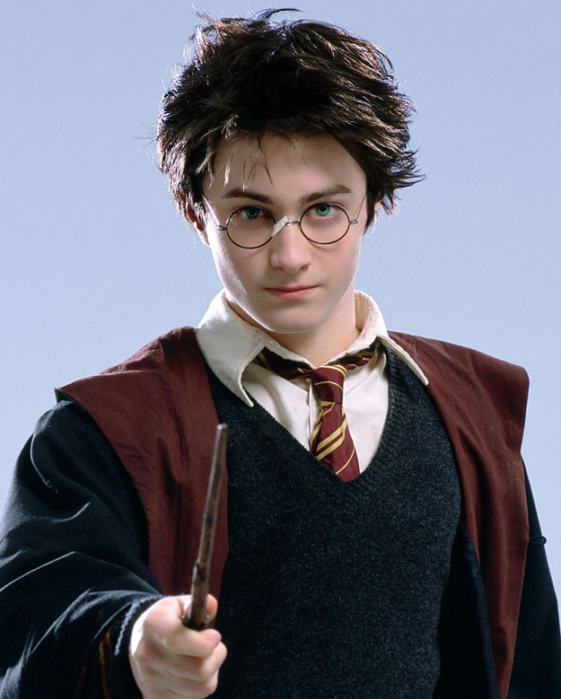

The Four Houses of Hogwarts
There are four Hogwarts houses, each with very different aspects and looks. They are called, Gryffindor, Ravenclaw, Slytherin, and Hufflepuff..
Gryffindor
GRYFFINDOR is described as the house of the daring and the brave. Its symbol is the lion, and its colors are red and gold, which shows this very clearly. Its founder is Godric Gryffindor. Its element is that of fire, and its ghost is Nearly Headless Nick. Students who belong in Gryffindor are normally very bold and chivalrous, but can be reckless or arrogant. Notable members are Harry Potter, Ron Weasley, Hermione Granger, Albus Dumbledore. In the Harry Potter books, they are seen as the main house, into which almost every main character is Sorted, possibly to expand on their rivalry against Slytherin house, which is the house of Voldemort.
Click to know moreSlytherin
SLYTHERIN is described as the house of the ambitious and the cunning. Their animal is the serpent, and their colors are green and silver. Its founder is Salazar Slytherin, and their element is water. The Slytherin ghost is the Bloody Baron. Slytherins are known to be ambitious, yearning for power, and tend to be pure bloods. They are seen as “the worst house” in the series, and produces the most dark wizards and witches. They are portrayed as the least liked of all the four houses. Notable members are Tom Riddle (Voldemort), Draco Malfoy, and Severus Snape. They are seen and used as the “dark house” in the books, a representation of evil and bad will as well.
Click to know moreRavenclaw
RAVENCLAW is described as the house of the wise. Their sigil is the eagle, and the colors of the crest are blue and bronze. The founder is Rowena Ravenclaw, and its element is air. The Ravenclaw ghost is Rowena Ravenclaw’s daughter, The Grey Lady, otherwise known as Helena Ravenclaw. Ravenclaw students are clever, eager to learn, but they can be seen as “weird” and are sometimes extremely competitive when it comes to exams. Notable members are Luna Lovegood, Filius Flitwick, and Cho Chang. Ravenclaw’s ghost, The Grey Lady, is notable in helping Harry in finding the Ravenclaw diadem, and her story may reflect themes of power.
Click to know moreHufflepuff
HUFFLEPUFF is described as the house of the loyal and the fair. The mascot is a badger- the colors are yellow and black. The founder is Helga Hufflepuff, and the earth is their element. The Hufflepuff ghost is Helga Hufflepuff. Hufflepuffs are seen as loyal, having a good sense of fair play, and are hard working and kind. They are, however, slighted by others, and are seen as people who do not fit into the other three houses, or are seen as “weak” or “untalented”. Notable members are Cedric Diggory, Nymphadora Tonks, and Newton Scamander. Hufflepuff might have been used as a way of seeing how other misfits are unjustly seen within society.
Click to know moreWhat you learn here in Hogwarts?
Muggle Studies is an elective class and part of the non-magical studies curriculum at Hogwarts School of Witchcraft and Wizardry. It is exactly what the name implies — the study of the daily lives of Muggles and how they cope with electricity, technology and science, and not magic.The subject was made compulsory in 1997 by Lord Voldemort, and instead of facts being taught regarding muggles the class was used to spread prejudice and lies
Transfiguration is a core class and subject taught at Hogwarts School of Witchcraft and Wizardry. It teaches the art of changing the form and appearance of an object. This type of magic is commonly referred to as "Transfiguration". There are limits to Transfiguration, which are governed by Gamp's Law of Elemental Transfiguration.[1] There are also many branches, including Cross-Species Transfiguration and Human Transfiguration. This type of magic is regarded as "very hard work" and is "more scientific" than any other subject. One has to get it exactly right for the transfiguration to be successful.[2]
Astronomy is a core class and subject taught at Hogwarts School of Witchcraft and Wizardry and Uagadou School of Magic. Astronomy is a branch of magic that studies stars and the movement of planets. It is a subject where the use of practical magic during lessons isn't necessary.Uagadou students are known to be skilled in Astronomy, implying the teaching that is provided at Uagadou is excellent.
History of Magic is a core class and subject taught at Hogwarts School of Witchcraft and Wizardry. This class is a study of magical history. This is one of the subjects where the use of magic practically isn't necessary. History of Magic is taught from the first year to the fifth, with the option of N.E.W.T. courses in sixth and seventh year.The professor of this subject taught at Hogwarts for many years before his death he was Cuthbert Binns and even after his death he continued teaching as a ghost.[1]
Defence Against the Dark Arts (sometimes written as DADA) is a subject taught at Hogwarts School of Witchcraft and Wizardry and Ilvermorny School of Witchcraft and Wizardry[1]. In this class students learn how to magically defend themselves against Dark Creatures, the Dark Arts, and other dark charms. Offensive magic is also taught in this class, such as how to duel, which requires the use of both offensive and defensive magic.The subject is core class at Hogwarts. The position of Defence Against the Dark Arts professor here was once rumoured to be jinxed, as no teacher could hold the post for more than a year. Tom Marvolo Riddle (Lord Voldemort) jinxed the position because Dumbledore did not give him the job when he applied for it.[3]
Charms is a core class and subject taught at Hogwarts School of Witchcraft and Wizardry. Unsurprisingly, it specialises in the teaching of charms. Even though mastering the science of charmwork is clearly essential to performing the greater part of magic, charmwork is seen as a "softer option" by some such as Augusta Longbottom who, incidentally, failed her Charms O.W.L.[1]Professor Filius Flitwick taught Charms for many years. It was rumoured that his expertise with charmwork made him a duelling champion
Potions is a core class and subject taught at Hogwarts School of Witchcraft and Wizardry. In this class, students learn the correct way to brew potions. They follow specific recipes and use various magical ingredients to create the potions, starting with simple ones and moving to more advanced ones as they progress in knowledge. A standard potions kit includes plant ingredients such as Belladonna and supplies such as glass phials and weighing scales.The professor of this subject is referred to as a Potions Master. The Potions Master at Hogwarts for many years was Horace Slughorn and later Severus Snape. It is unknown if Professor Slughorn stayed as Potions Master or if someone else took over following the Second Wizarding War.
The Sorting Hat
The famous Hogwarts Sorting Hat gives an account of its own genesis in a series of songs.[1] During the opening banquet at the beginning of each school year, the first-year students are lined up and their names read aloud alphabetically. Each then takes a seat on a stool and the hat is placed on her or his head.
The hat is battered and old; it's patched, frayed, and extremely dirty. In order to speak and sing, a tear along the brim opens like a mouth. It speaks to the wearer inside of the hat with a small, quiet voice, using Legilimency to interpret their thoughts and respond to them.[2] After a time of consideration, the hat announces its choice aloud for all to hear, and the student joins the selected house. The moment of consideration varies in length, from over five minutes (known as "hatstall") to less than a second.The Sorting Hat is notorious for refusing to admit it has made a mistake in its sorting of a student.[3] On those occasions when Slytherins behave altruistically or selflessly, when Ravenclaws flunk all their exams, when Hufflepuffs prove lazy yet academically gifted, and when Gryffindors exhibit cowardice, the Hat steadfastly backs its original decision. On balance, however, the Hat has made remarkably few errors of judgement over the many centuries it has been at work
Legend has it that the Sorting Hat was sewn roughly one thousand years ago and began as a normal hat belonging to Godric Gryffindor. When Gryffindor, along with Salazar Slytherin, Rowena Ravenclaw and Helga Hufflepuff, wondered how they would continue to sort the students when the four were dead, Gryffindor pulled his hat from his head and, along with the other founders, enchanted it with their combined intelligence. All four founders wanted to ensure that students would be sorted into their eponymous houses, which would be selected according to each founder's particular preferences in students.
Click to Know where you belongKings Cross
The Best Wizards of all age
Hogwarts has seen many exemplory Wizards
Harry Potter
Harry James[43] Potter (b. 31 July, 1980) was a half-blood[44] wizard, the only child and son of the late James and Lily Potter (née Evans), and one of the most famous wizards of modern times. In what proved to be a vain attempt to circumvent a prophecy that stated that a boy born at the end of July of 1980 could be able to defeat him, Lord Voldemort tried to murder him when he was a year and three months old. Voldemort murdered Harry's parents as they tried to protect him, shortly before attacking Harry.
Hermione Jean Granger
Hermione Jean[14] Granger (b. 19 September, 1979[1]) was a Muggle-born[15] witch born to Mr and Mrs Granger, both dentists in London. Hermione was raised as a Muggle girl until, at age eleven, she learned that she was a witch and had been accepted into Hogwarts School of Witchcraft and Wizardry. She began attending the school on 1 September, 1991, where she was subsequently sorted into Gryffindor House, despite having the choice to be in Ravenclaw. She possessed a brilliant academic mind, and proved to be a gifted student in almost every subject that she studied. She was very studious and bookish.
Ronald Bilius "Ron" Weasley
Ronald Bilius[25] "Ron" Weasley (b. 1 March, 1980) was a pure-blood[26] wizard, the sixth son of Arthur and Molly Weasley (née Prewett), and the deuteragonist of the Harry Potter series. He was also the younger brother of Bill, Charlie, Percy, Fred, George, and the elder brother of Ginny. Ron and his brothers and sister lived in the Burrow. Ron began attending Hogwarts School of Witchcraft and Wizardry in 1991 and was Sorted into Gryffindor House. He soon became best friends with fellow student Harry Potter and later Hermione Granger.
Oliver Wood
Oliver Wood (born c.1975 or 1976) was a Scottish wizard who was the Keeper and Captain for the Gryffindor Quidditch team. He attended Hogwarts School of Witchcraft and Wizardry from 1987 to 1994. Oliver was known for his determination and skill on the playing field, and his long lectures before practises. He led the Gryffindor team to victory in the Quidditch Cup in his seventh year.
Neville Longbottom
Neville Longbottom (b. 30 July, 1980[1][2]) was a pure-blood wizard, the only child and son of Frank and Alice Longbottom. He began school at Hogwarts School of Witchcraft and Wizardry in 1991 and was sorted into Gryffindor House. His parents were well-respected Aurors and members of the original Order of the Phoenix. About sixteen months after Neville's birth, his parents were tortured into insanity by four Death Eaters with the Cruciatus Curse. They were placed in the Janus Thickey Ward at St Mungo's Hospital for Magical Maladies and Injuries, leaving Neville to be raised by his grandmother, Augusta Longbottom.
Percy Weasely
Percy Ignatius Weasley (b. 22 August, 1976) was a pure-blood wizard, the third child of Arthur and Molly Weasley (née Prewett). He was the younger brother of Bill and Charlie and the older brother of Ron, Ginny, George Weasley, and the late Fred Weasley. He attended Hogwarts School of Witchcraft and Wizardry from 1987-1994, and was both a prefect and Head Boy. He took the rules very seriously, and did not believe that Fred and George would get very far with their jokes. It was also once stated by his brother Ron that "Percy wouldn't know a joke if it danced naked in front of him wearing Dobby's tea cosy". A high achiever, he went to work at the Ministry of Magic after leaving school, working in the Department of International Magical Cooperation under Barty Crouch Snr and later as Junior Assistant to the Minister for Magic himself.
Draco Malfoy

Draco Lucius[6] Malfoy (b. 5 June, 1980) was a pure-blood wizard and the only son of Lucius and Narcissa Malfoy. The son of a Death Eater, Draco was raised to believe strongly in the importance of blood purity. He attended Hogwarts School of Witchcraft and Wizardry from 1991-1998 and was sorted into Slytherin House. During his years at Hogwarts, he became friends with Vincent Crabbe, Gregory Goyle, Pansy Parkinson, and other fellow Slytherins, but he quickly developed a rivalry with Harry Potter.
This is Us
The Ministry Of Magic
A Ministry of Magic is the primary governing body of the magical community in many countries. Headed by a Minister for Magic, a Ministry of Magic is responsible for regulating and enforcing laws for the magical community, as well as keeping said community hidden from the Muggle world.
Platform 9 3/4
Platform Nine and Three-Quarters (Platform 9¾) is a platform at King's Cross Station in London. Magically concealed behind the barrier between Muggle Platforms Nine and Ten, this Platform is where Hogwarts School of Witchcraft and Wizardry students board the Hogwarts Express on 1 September.